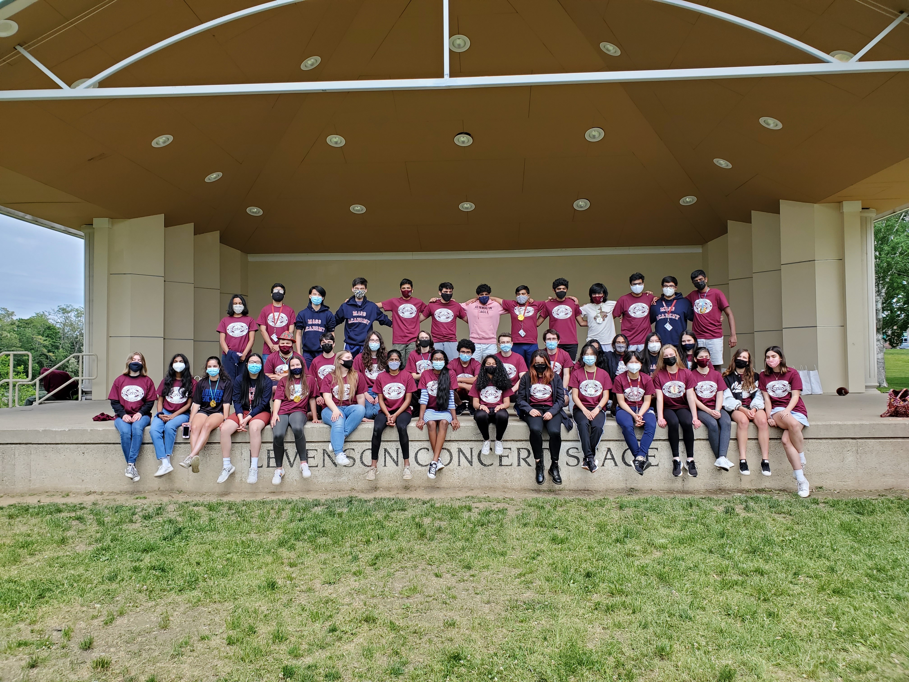
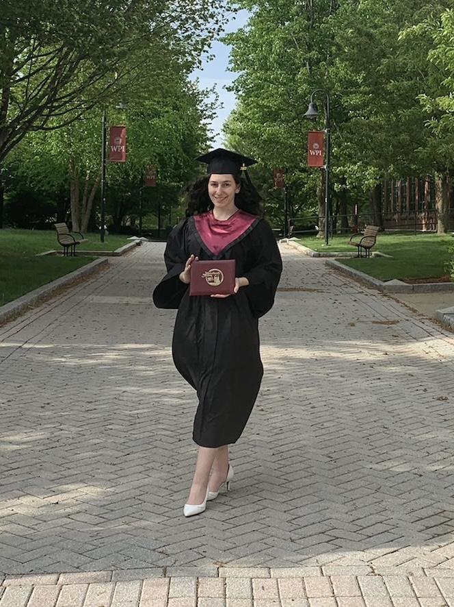
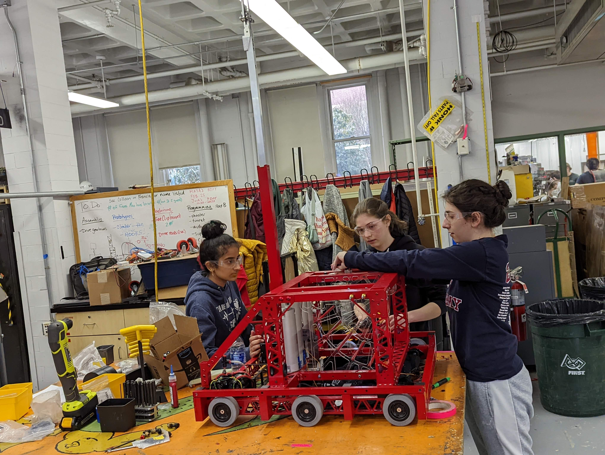
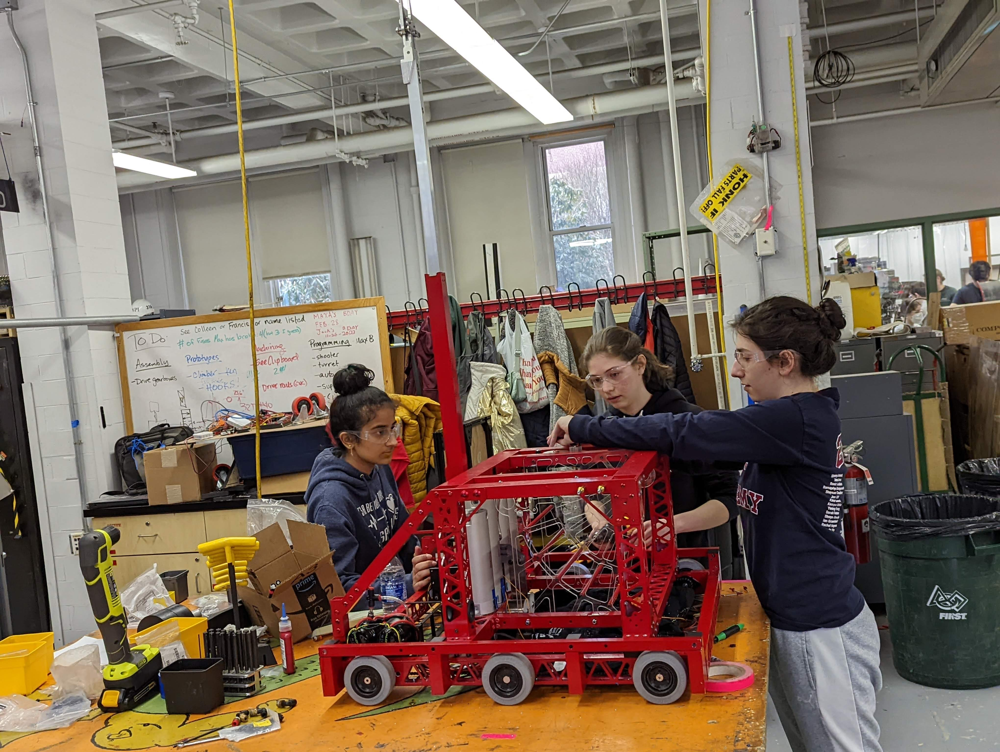

The Massachusetts Academy of Math and Science (MAMS) is an advanced, two-year public high school that focuses on STEM. I graduated from there in the class of 2022. During my junior year, I learned through specialized grade 11 coursework in mathematics, physics, computer science, humanities, language, and technical writing along with projects in independent research, collaborative assistive technology engineering, group application development, and community service. I chose my grade 12 coursework from the Worcester Polytechnic Institute (WPI) undergraduate curriculum, including chemistry, physics, calculus, and English literature and writing and completed an independent study project (SISP). I continued studying at WPI after graduating from Mass Academy. Check the navigation bar to find out more about my classwork (under the Mass Academy tab) and my projects (under the Projects tab).

 
 
